Beyde Drive
Beyde DriveBelgeler ve iletişim
Verilerinizin nasıl kullanıldığını, uygulamanın kurallarını ve bize nasıl ulaşacağınızı buradan okuyabilirsiniz.
Gizlilik Politikası
Hangi verileri neden kullanıyoruz. Araç verileri ve kayıtlarınız yalnızca cihazınızda saklanır; reklam ya da izleme aracı yok.
Oku › 📄Kullanım Şartları
Ücretsiz deneme, Beyde Pro aboneliği, iptal ve iade, güvenli kullanım kuralları.
Oku › 🗑️Verilerinizi silme
Cihazınızdaki verileri nasıl sileceğiniz ve sunucudaki kayıtların silinmesini nasıl isteyeceğiniz.
Oku ›İletişim ve destek
Soru, öneri ve hata bildirimi için: beydeapps@gmail.com
Nasıl çalışır? 3 adımda
Adaptörü takın
Aracınıza uygun bir OBD2 adaptörünü aracın OBD2 soketine takın. Soket genelde direksiyonun altında, sol diz hizasındadır. Kontağı açın; motoru çalıştırmak şart değil.
Bağlanın
Bluetooth adaptörü telefonun ya da teybin Bluetooth ayarlarından eşleştirin (şifre genelde 1234 ya da 0000). Bluetooth LE (4.0) adaptör eşleştirilmez, uygulamada aranıp seçilir. Wi-Fi adaptörde telefonu adaptörün Wi-Fi ağına bağlayın. USB kablolu adaptörü teybin USB girişine takın (telefonda OTG aparatıyla). Sonra uygulamada adaptörünüzü seçin.
Kullanın
Göstergeler hemen canlanır. Arıza lambası yanıyorsa Arıza sekmesinden kodu ve Türkçe açıklamasını görün. Adaptörünüz yoksa uygulamadaki test modunda her şeyi deneyebilirsiniz.
Hangi adaptör gerekli?
✓ Desteklenen bağlantılar
- Bluetooth (klasik) OBD2 adaptörler — en yaygın tür, Android telefon ve teyplerle uyumlu.
- Bluetooth LE (4.0 / BLE) OBD2 adaptörler — telefonla eşleştirilmez; uygulamada Ayarlar › Bağlantı › Bluetooth LE adaptör ara ile bulunup seçilir.
- Wi-Fi OBD2 adaptörler — adaptör kendi Wi-Fi ağını açar, telefon/teyp o ağa bağlanır.
- USB kablolu OBD2 adaptörler (FTDI, CH340, PL2303, CP210x çipli) — teybin USB girişine takılır, takınca kendiliğinden bağlanır; telefonda OTG aparatı gerekir.
Seçerken dikkat
- Aracınız OBD2 soketli olmalı (Türkiye'de genelde 2001 sonrası benzinli, 2004 sonrası dizel araçlar).
- Çok ucuz, kalitesiz adaptörler bağlantı kopması ya da eksik veri sorunu çıkarabilir.
- Gösterilen değerler aracın bildirdiğine bağlıdır; her araç her bilgiyi vermez (ör. bazı araçlar yakıt seviyesi bildirmez).
Uygulamada neler var?
Beyde Drive'ın tüm özellikleri, bölüm bölüm.
🚗 Göstergeler
- 20'den fazla gösterge teması; ibre stili, ışık rengi, yazı tipi ve dolgu ayarlanabilir
- Hız, devir, su ve yağ sıcaklığı, turbo basıncı, akü voltajı, gaz kelebeği, motor yükü, yakıt ve anlık tüketim
- Göstergeye uzun basarak ne göstereceğini seçme, kendi temanı tasarlama
- Gece modu, otomatik parlaklık, vites ışığı; teypte yatay, telefonda dikey kullanım
⚠️ Arıza tespit
- Arıza kodlarını okuma ve Türkçe açıklama: yaklaşık 450 standart (her markada aynı anlamdaki) kod için ayrıntılı açıklama; üreticiye özel kodlarda yalnızca ilgili sistem gösterilir, anlamı servis cihazıyla doğrulanmalıdır
- Arızanın oluştuğu anki hız, devir, sıcaklık ve voltaj değerleri
- Arıza kodlarını silme (motor arıza lambasını söndürme)
- Paylaşılabilir arıza raporu; uygulama arka plandayken yeni arıza çıkarsa bildirim
- Arıza sihirbazı: belirtiyi seçin (çekmiyor, titriyor, hararet, marş basmıyor, yağ lambası…); sorular, araç dururken kısa ölçüm (voltaj, sıcaklık, yakıt düzeltmeleri, rölanti) ve arıza kodlarıyla kontrol edilmesi önerilen olası sebepler (tahmini) ve servise / ustanıza gösterebileceğiniz özet. Tahmindir, kesin teşhis değildir.
📊 Canlı veri ve uyarılar
- Aracın desteklediği tüm sensörler canlı listede
- Hararet, düşük/yüksek voltaj, devir ve hız uyarıları; sesli uyarı
- Akü sağlığı (marş anında ölçüm), lastik basıncı (Bluetooth TPMS sensörleri)
- Buzlanma uyarısı, eko sürüş ipuçları, yorgunluk ve mola uyarısı
🏁 Performans
- 0-100, 0-200, 100-200 km/h, 402 m, ara hızlanma ve 100-0 fren testi
- Işıkla start ve tepki süresi, hedef hız, GPS tur sayacı
- En iyi ölçümünüze karşı canlı hayalet yarış, tahmini güç (dyno) grafiği
- Sonuç kartları ve göstergeli video kaydı; arkadaşınla kapışma kodu
🗺️ Harita ve yol
- Sesli navigasyon; rotayı istersen başka harita uygulamasında açma
- Yol hız sınırı ve hız kamerası uyarısı (OpenStreetMap verisi)
- Arabam nerede? Park yerini kendiliğinden kaydeder, haritada gösterir ve oraya yol tarif eder; park süresi hatırlatıcı
- Yakındaki benzinlik, LPG, otopark, servis, şarj istasyonu; rotada hava durumu uyarısı
- Şehrinizi önceden indirip haritayı internetsiz kullanma
⛽ Garaj ve masraf
- Yakıt defteri ile gerçek tüketim (depo dolumlarından), masraf takibi
- Bakım, sigorta, kasko, muayene ve MTV hatırlatıcıları
- Aylık araç sağlık karnesi, aylık karne ve yılın özeti
- Aylık PDF yakıt/masraf raporu; birden fazla araç ve sürücü profili
🛣️ Yolculuk ve sürüş
- Her yolculuğun kaydı: km, süre, tüketim, en yüksek hız, rota
- Sürüş puanı, haftalık özet ve rozetler; yolculuk tekrarı
- Haftalık özet ve aylık karneyi Instagram/Facebook hikayesi olarak paylaşma
🛡️ Güvenlik
- Kaza algılama: sert darbeden sonra cevap yoksa acil durum kişisini arar
- Araç kamerası (dashcam): tarih, saat, hız ve konum görüntüye yazılır; kazada kayıt saklanır
- Uygulama araca kontak açma/kapama gibi komut göndermez, yalnızca okur
🎵 Müzik
- Telefondaki ve USB bellekteki şarkılar: favoriler, çalma listeleri, klasörler, en çok dinlenenler, arama
- Kaldığı yerden devam, bas/tiz ayarı, kapaktan renk, navigasyon konuşurken müziği kısma
- USB takılınca "çalayım mı?"; Spotify, YouTube Music gibi uygulamaları göstergeden kontrol
🎤 Sesli asistan
- Tüm ayarlar sesle: "parlaklığı biraz artır", "hararet uyarısını 110 yap", "geri al"
- Müzik ve kayıt: "USB'deki şarkıları çal", "40 litre yakıt aldım 1800 lira", "masraf ekle yıkama 200"
- Bilgi: "sürüş puanım", "en iyi 0-100", "bu ay yakıta ne harcadım"; kendi kısa yollarınız
- Araca komut göndermez, kesin teşhis koymaz; değerleri okur ve arıza sihirbazını önerir
⚙️ Kolaylıklar
- Telefon ↔ teyp otomatik eşitleme (aynı Wi-Fi ya da Bluetooth; şifreli, sunucusuz)
- Sürüş modları (Şehir, Uzun yol, Pist, Gece, Kış); saate ve konuma göre otomatik ayarlar
- Hızlı ayar paneli, geri al, ayarları QR kodla başka cihaza aktarma, yedekleme (isterseniz haftalık, kendi Google Drive'ınıza)
- Adaptör testi: cevap hızı, cevapsız sorgu ve bağlantı kopmalarını ölçer
- Şasi numarasından (VIN) marka önerisi; siz onaylamadan kaydedilmez
- Teyp açılınca otomatik başlama; Türkçe, İngilizce, Almanca, Rusça, Arapça
- Adaptör olmadan her şeyi denemek için test modu
🩺 Arıza sihirbazı
Arabanızda bir sorun mu var ama arıza kodu yok ya da kodun ne anlama geldiğini bilmiyor musunuz? Arıza sihirbazı belirtiden yola çıkarak kontrol edilmesi önerilen olası sebepleri tahmini olarak sıralar ve servise / ustanıza gösterebileceğiniz bir özet hazırlar. Sihirbaz "arıza budur" demez; kesin teşhisi usta koyar.
Belirtiyi seçin
16 belirti: araç çekmiyor, titriyor, hararet, marş basmıyor, motor arıza lambası, fazla yakıt, rölanti dalgalı, duman, anormal ses, akü/şarj, motor ısınmıyor, koku, vites, turbo, dizel (DPF / kızdırma / AdBlue), yağ lambası.
Birkaç soruyu cevaplayın
Her belirtiye özel sorular (ör. "Ne zaman ısınıyor?", "Fan çalışıyor mu?"). Bilmediklerinizi boş bırakabilirsiniz. Hararet, yağ lambası, yakıt kokusu gibi durumlarda önce güvenlik uyarısı gösterilir.
Araç dururken kısa ölçüm
Adaptör bağlıysa kontak açıkken, rölantide ve boşta 2500 devirde kısa ölçüm yapılır: akü ve şarj voltajı, su ve yağ sıcaklığı, yakıt düzeltmeleri, rölanti kararlılığı, emme basıncı, lambda ve hava akışı. Araç hareket ederse ölçüm durur.
Arıza kodları ve sonuç
Arıza kodları okunur ve belirtiyle eşleştirilir. Sonuçta kontrol edilmesi önerilen olası sebepler tahmini bir sıralamayla, ne kontrol edilmesi gerektiği, ne kadar acil olabileceği ve tahmini etkileyen bilgilerle listelenir. Ölçüm yorumları genel kabul gören aralıklara göredir; aracınıza göre normal değerler farklı olabilir. "Servise gönder" ile özeti WhatsApp ya da e-postayla servise / ustanıza iletin.
Referans ölçümü
Aracınız sorunsuz çalışırken bir kez ölçüm kaydedin; sonraki ölçümler kendi aracınızın değerleriyle yan yana gösterilir. Program aracın sorunsuz olduğunu bilemez: referans sizin beyanınıza göre kaydedilir. Arıza kodu varsa ya da değerler genel aralığın dışındaysa kaydedilmez. Karşılaştırma yalnızca değer farkını gösterir, sebep söylemez.
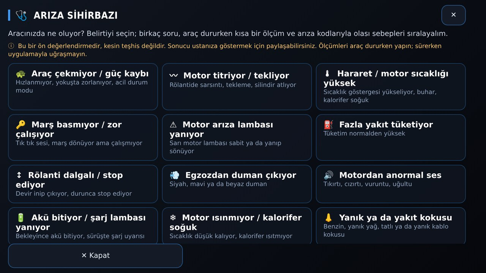
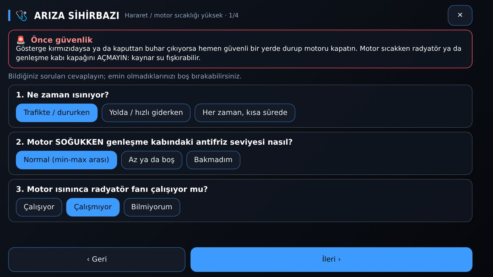
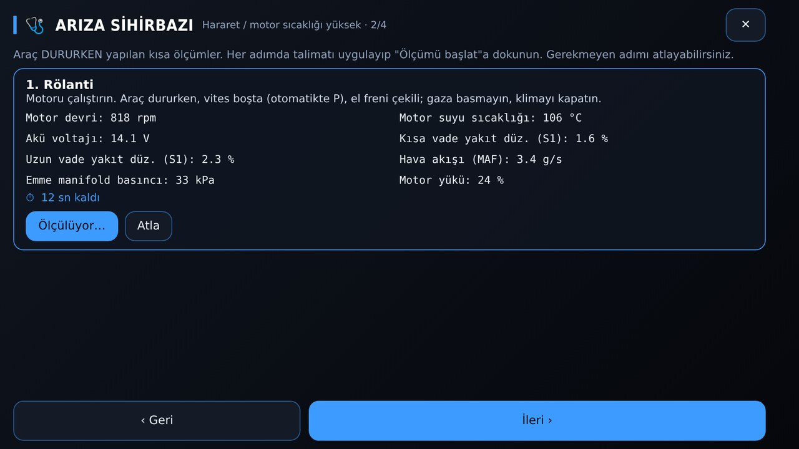
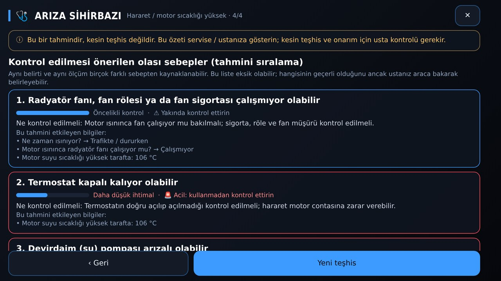
Ücretsiz ve Beyde Pro
Ücretsiz — her zaman
- Gösterge (4 tema + klasik düzenler)
- Arıza kodu okuma ve Türkçe açıklama
- Arıza sihirbazı
- İlk 30 gün tüm özellikler açık, kart bilgisi istenmez
Beyde Pro
- Canlı veri ve arıza kodu silme
- Harita, navigasyon, internetsiz harita
- Yolculuk kayıtları, performans, garaj ve masraf
- Tüm temalar ve tema tasarımcısı, video kaydı, sesli asistan
Sık sorulanlar
Araca zarar verir mi?
Hayır. Uygulama yalnızca veri okur; kontak açma/kapama gibi kontrol komutları göndermez. Arıza kodu silme yalnızca siz istediğinizde yapılır (motor kapalı, kontak açıkken).
Arıza kodunu silince arıza gider mi?
Hayır, yalnızca lamba ve kayıt silinir. Sorun devam ediyorsa kod tekrar gelir. Açıklamalar genel bilgidir, servis teşhisinin yerine geçmez.
Teyple çalışır mı?
Evet. Android araç teyplerinde (multimedya ekranlar) yatay ekranda çalışacak şekilde tasarlandı; teyp açılınca otomatik başlatılabilir ya da teybin ana ekranı yapılabilir. USB kablolu adaptör de takılabilir.
İnternet gerekir mi?
Göstergeler ve arıza okuma internetsiz çalışır. Harita, navigasyon ve hava durumu için internet gerekir; şehrinizi önceden indirirseniz harita internetsiz de görünür.
Verilerim nereye gidiyor?
Araç verileri ve kayıtlar yalnızca cihazınızda saklanır. Ayrıntılar Gizlilik Politikası'nda.
Aboneliği nasıl iptal ederim?
Google Play Store › Profil › Ödemeler ve abonelikler › Abonelikler › Beyde Drive › İptal. İptal ederseniz ödediğiniz dönemin sonuna kadar Pro açık kalır.
Ekran görüntüleri
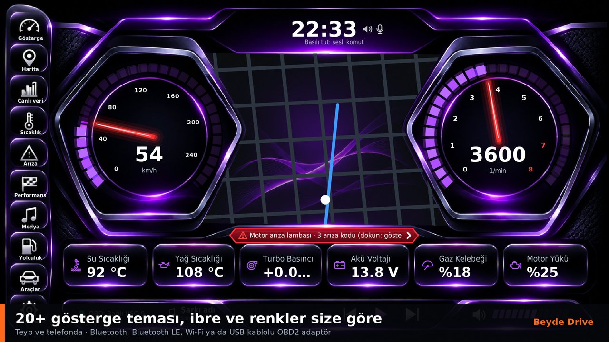
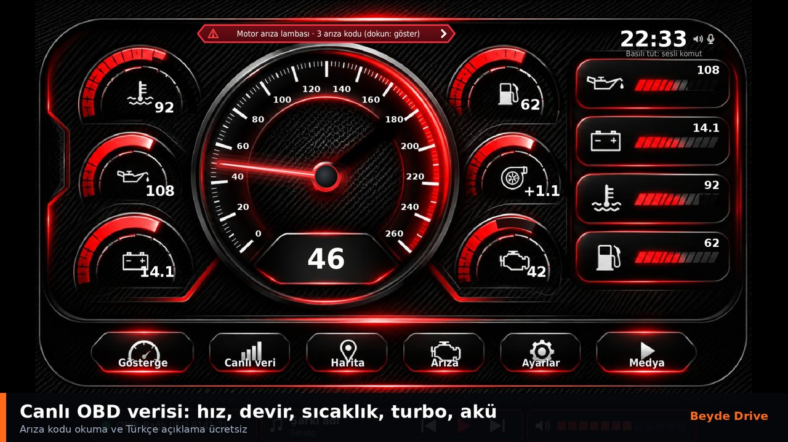
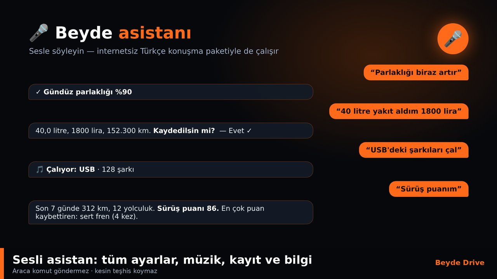
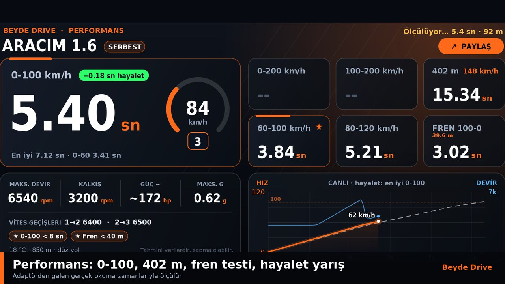
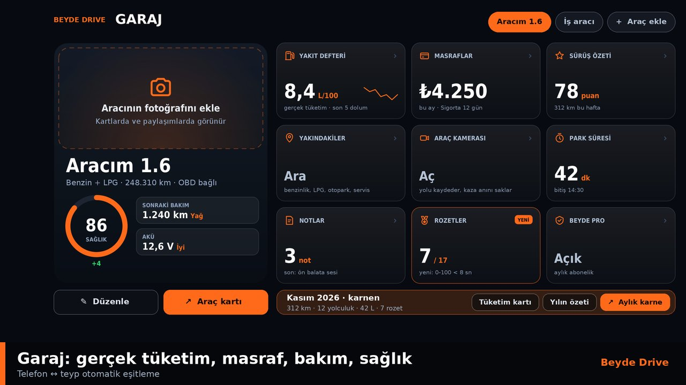
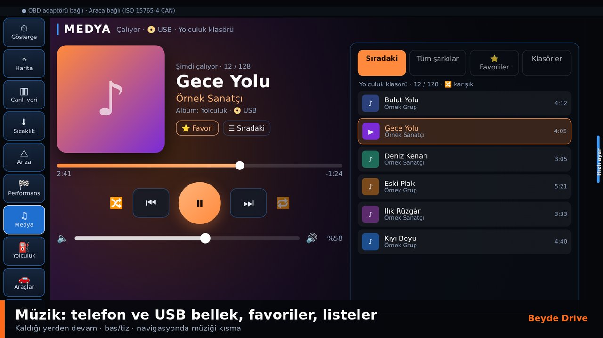
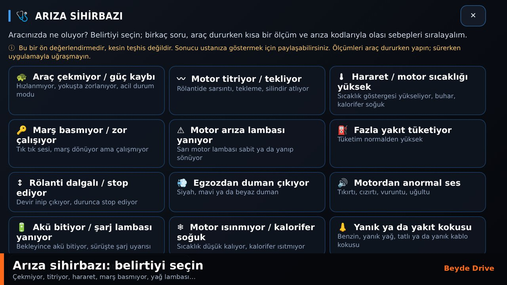
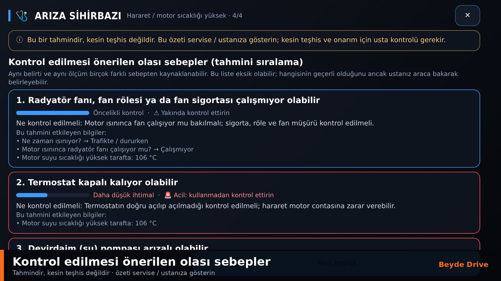